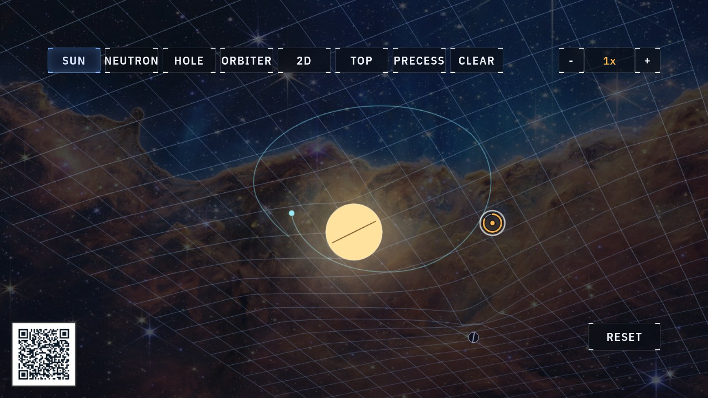

General relativity · curved spacetime
Spacetime
Einstein reimagined gravity as geometry: every mass bends the spacetime around it. This is the famous stretched-sheet picture of that idea, drawn honestly and to scale.

At the display
- Place a SUN, then a NEUTRON star, then a HOLE and compare their dents. Watching how the same idea produces such different depths is the heart of this experiment.
- Pinch ORBITER to send a marble around a mass, then try PRECESS: the marble's oval path itself starts to turn, tracing a slow rosette around the well.
- Try BINARY and SYSTEM for ready-made scenes. BINARY sets two black holes circling each other, shedding energy as gravitational waves until they spiral together and merge in a single flash. SYSTEM builds a small solar system, three planets on oval orbits that slowly swing their long axes around the star.
- Pinch with both hands at once to grab the whole scene and spin it. The 2D and TOP buttons give you other angles.
What's really happening
Newton described gravity as a pull between masses and left open the question of how that pull crosses empty space. Einstein's answer was geometry: a mass curves the spacetime around it, and everything moving through the curved region simply follows the straightest path available. Seen this way, an orbit is what traveling straight ahead looks like in a curved place.
The sheet is the standard way to picture that, and most versions exaggerate it, drawing every dent as a dramatic funnel. Here the depths are honest. A star has a surface, so its dent is a smooth bowl that bottoms out; a black hole, which lacks any surface, keeps steepening all the way down to the horizon, where the sheet runs vertical. The quantity that separates them is compactness, the amount of mass packed into a given size.
Compactness also explains a result that surprises almost everyone at this display: a truly gigantic star barely dents the sheet. Growing a star spreads its mass across an enormous radius, and the bending at the surface weakens as that radius grows. Betelgeuse carries roughly eighteen times the mass of our Sun, yet space at its surface bends about forty times less. The Sun you place here has already been squeezed some twelve thousand times more compact than the real one, purely so that its dimple shows up on screen; drawn to true scale, the real Sun's dent would be shallower than a single pixel. Ordinary matter leaves spacetime almost perfectly flat, and the deep wells of this experiment belong entirely to the compact objects.
The twist worth taking home: far from either object the two dents are identical, so if the Sun were swapped tonight for a black hole of the same mass, Earth would keep its orbit exactly. This is why a black hole makes a poor cosmic vacuum cleaner. Its strangeness only shows up close, inside the region where the funnel steepens.